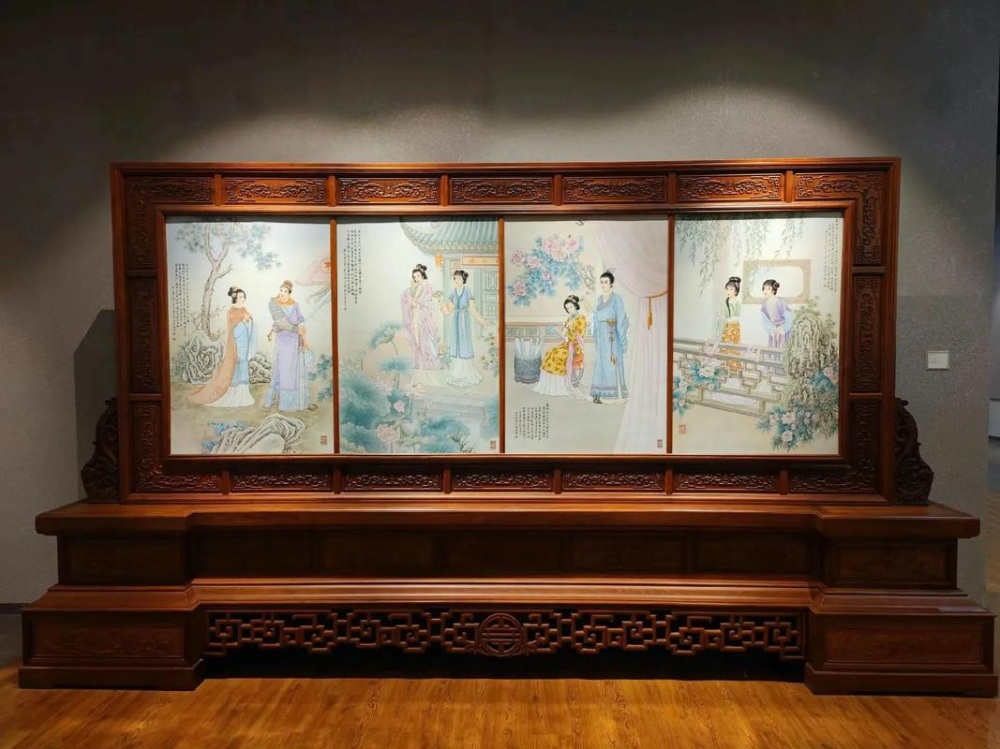
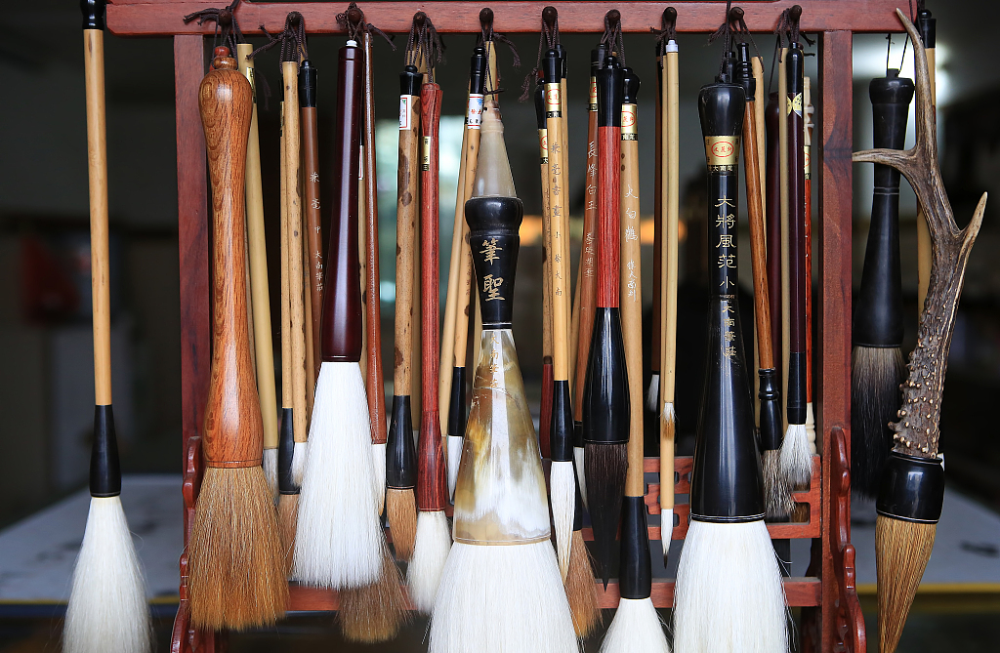
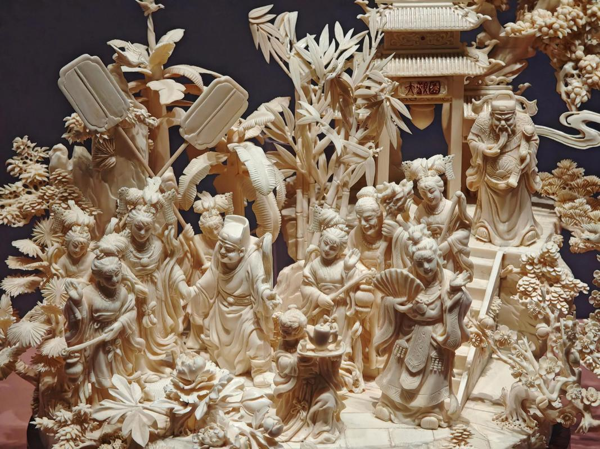
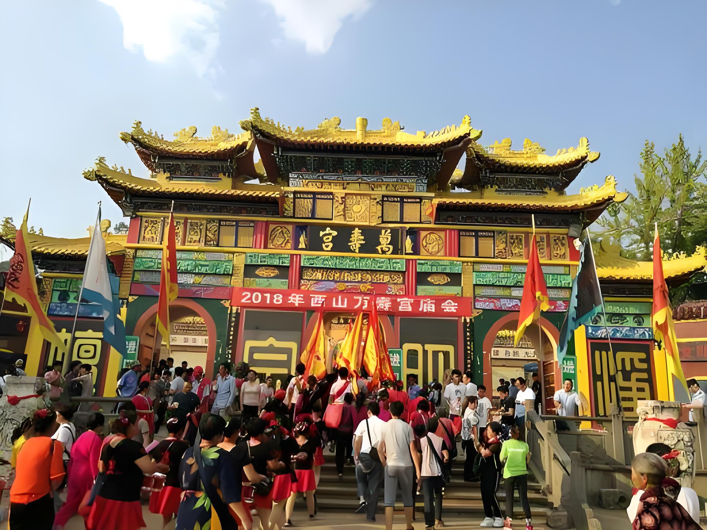
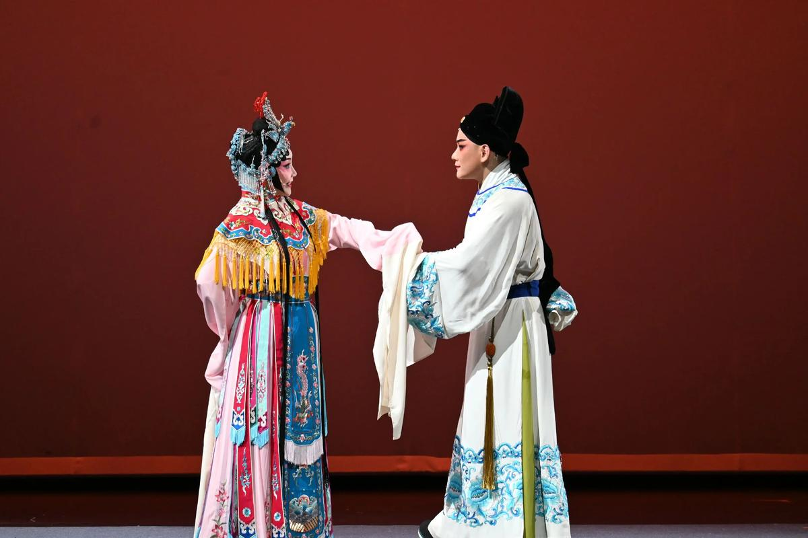
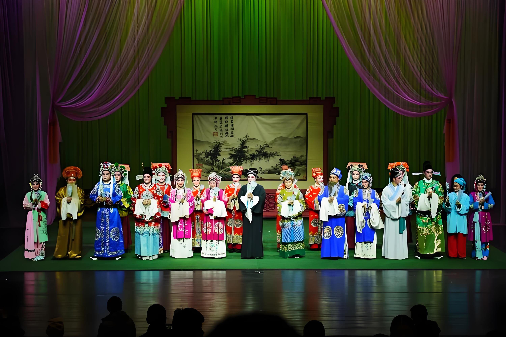

赣
鄱
非
遗
一方水土 · 百代匠心
南昌国家级 / 省级非遗名录 · 活态传承
↓ 向下滑动 · 走进非遗工坊
🧵 非遗工坊 · 匠心传世
每一项非遗，都是一卷等待展开的匠心故事
南昌瓷板画
国家级非遗 绘
以瓷为纸，以颜料为墨，经高温烧制而成。瓷板画融合绘画与陶瓷工艺，色彩经久不褪，被誉为"瓷上丹青"。南昌瓷板画自清末传承至今，已逾百年，是江西最具代表性的民间美术之一。
进贤文港毛笔
国家级非遗 制
文港毛笔制作技艺始于东晋，已有 1600 余年历史。选料考究、工序繁复，素有"笔中之冠"的美誉。文港镇更被誉为"华夏笔都"，全国 70% 的毛笔产自于此。
安义木雕
省级非遗 雕
安义木雕以樟木、楠木为材，融合浮雕、透雕、圆雕等多种技法，图案多为龙凤呈祥、花鸟人物，广泛应用于古建筑、家具装饰。刀法刚劲有力，线条流畅灵动，尽显赣地民间木雕之精髓。
👐 匠人之手 · 传承谱系
从清末至今，三代匠心接力
西山万寿宫庙会
国家级非遗 祭
西山万寿宫庙会源自东晋，为纪念许真君而设。每年农历八月，数十万信众齐聚西山，形成"朝仙"盛景。庙会融祭祀、商贸、游艺于一体，是赣鄱民俗文化的活态博物馆。
赣剧
国家级非遗 唱
赣剧由弋阳腔演变而来，是江西最具代表性的地方戏曲剧种。唱腔高亢激越、表演粗犷豪放，经典剧目《还魂记》《窦娥冤》等传唱至今。赣剧被誉为"南戏活化石"，承载着赣鄱大地的文化记忆与情感认同。
南昌采茶戏
省级非遗 戏
南昌采茶戏源自民间茶歌、灯彩，唱腔清亮婉转、表演生动诙谐，极具赣地乡土气息。传统剧目《秧麦》《磨豆腐》等，以方言俚语演绎百姓生活，是南昌人最亲切的乡音记忆。
匠心不息 · 传承不止
📝 非遗小考 · 匠心问答
测一测你对南昌非遗的了解有多少